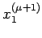
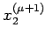
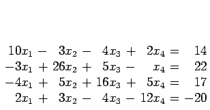
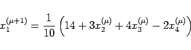
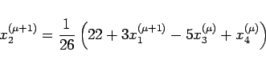
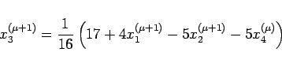
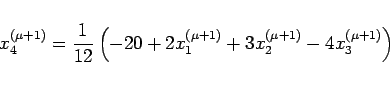

Inhalt Index DeskTop Bronstein

 Numerische Mathematik Numerische Lösung von Gleichungssystemen Lineare Gleichungssysteme Iteration in Gesamt- und Einzelschritten
Numerische Mathematik Numerische Lösung von Gleichungssystemen Lineare Gleichungssysteme Iteration in Gesamt- und Einzelschritten


Hat man die 1. Komponente  nach dem JACOBI-Verfahren berechnet, dann liegt es nahe, diesen Wert bei der Berechnung von  bereits zu verwenden. Geht man entsprechend bei der Berechnung aller übrigen Komponenten vor, dann erhält man die Iterationsvorschrift
| Beispiel | |||||||||||||||||||||||||
|
 



|